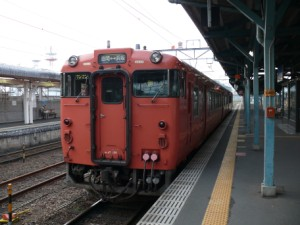
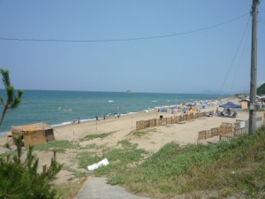
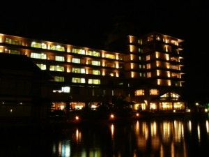
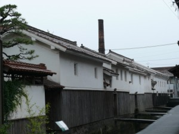
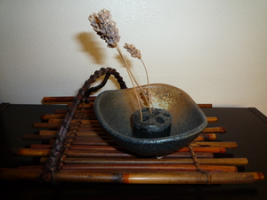

Le Japon est un archipel consistant en 6 852 îles. Les quatre îles majeures sont appelées Honshu, Hokkaido, Kyushu et Shikoku. Certaines villes japonaises sont connues dans le monde, comme Tokyo, Kyoto, ou Hiroshima, mais ce n’est pas tout. Nous avons une grande variété de régions et de paysages. Même pour moi, il y a encore beaucoup d’endroits que je n’ai jamais visités.
L’année 2011, le Japon a subi des dégâts considérables à cause d’un tremblement de terre qui a laissé de nombreuses victimes, et les images du centre nucléaire dissuadent toujours les étrangers de faire un voyage au Japon. C’est dommage. En tant que guide qualifiée, je voudrais améliorer l’image de mon pays et aider les touristes à apprécier leur voyage au Japon.
Le nombre de visiteurs étrangers au Japon a fortement chuté par le passé, mais depuis peu il commence à remonter. J’espère que beaucoup de touristes trouveront le Japon intéressant.
Pour vous inciter au voyage, je vous présente ici un petit périple que nous avons fait pendant l’été 2011, avec mon mari.
La première étape a été la région, San-in, et ensuite de Chugoku.
À partir de ma ville natale, Toyo -oka, nous avons visité 5 des départements de ces régions en une semaine, et ce intégralement en train !
Le premier jour : Tottori
La ville, Tottori, est située face à la mer de Japon dans l’ouest de l’île Honshu. Cette ville est connue comme étant une des moins peuplées du Japon. Cette région est d’ailleurs très calme, on y croise relativement peu de personnes : idéal pour les vacances ! Il y a aussi beaucoup de nature, vous serez surpris par les beaux paysages. En fait, la région de San-in est enregistrée comme”geopark » (un parc géologiquement unique) auprès de l’UNESCO. Le littoral de cette région est unique, avec de nombreux sites intéressants pour les scientifiques.
Tottori Sand Dunes : les seules grandes dunes du Japon, s’étendant 30 km².
Quand nous avons visité cet endroit, il y faisait très chaud et le sable était brûlant. Je n’ai pas pu marcher pieds nus, aussi n’oubliez pas de prendre vos sandales ! Il faut marcher une certaine distance avant d’atteindre un point de vue sur la mer et ce n’est par confortable de marcher avec les chaussures ordinaires. Mes baskets s’étaient remplies de sable… Ou, vous avez un autre choix : certaines personnes profitaient des chameaux mis à disposition !!


Il y a un grand parking devant l’entrée du parc, ainsi que de petits magasins le long de la route. Nous avons mangé le déjeuner dans le restaurant de la colline, accessible par téléphérique. Belle vue et bons repas traditionnels : j´ai envie d’y retourner…


La Gare de Tottori
Nous avons quitté la ville de Toyo -oka, très tôt le matin, pour gagner du temps et éviter la foule. Entre les gares de Toyo -oka et de Tottori, vous pouvez profiter de la vue sur un beau littoral sauvage. Mon mari aime cette partie du Japon.
À la Gare de Tottori, vous trouverez des cartes et des brochures gratuites, très utiles. Vous aimerez sûrement cet aspect du Japon : beaucoup de services, bien organisés et des trains toujours à l’heure….


Nos destinations suivantes furent Hakuto Jinja (Hakuto Sanctuaire) et Hakuto Kaigan (la plage Hakuto). Pour accéder à cette plage, nous avons pris un bus à destination de Shikano à la Gare de Tottori et nous sommes descendus à Hakuto Jinja. Il faut à peu près 30 minutes.

Hakuto Jinja (Hakuto Sanctuaire). La combinaison des caractères kanji évoque la couleur blanche, Haku, et un lièvre, To. Ainsi, ce sanctuaire est dédié à un lièvre blanc.
Selon le mythe, un lièvre habitait sur une petite île appelée Oki, d’où il essayait de traverser la mer pour atteindre la grande île Honshu. Comme il ne pouvait le faire seul, il négocia avec les requis dont il se joua. Sous le prétexte de les compter et de comparer leur nombre avec celui des lièvres, il leur proposa de s’aligner à partir du rivage, jusqu’à Honshu. Il pourrait ainsi les compter un par un. Intéressés, les requis s’alignèrent, formant ainsi un pont de leur dos. Le lièvre commença à leur marcher dessus, en faisant semblant de les compter. Mais cela l’amusait beaucoup et il ne put y tenir : arrivé sur le dernier requin, juste avant le rivage tant attendu, et trop sûr de sa victoire, il ria et se moqua de la bêtise des requins qu’il avait trompés. Trop tôt : furieux, les requins l’attaquèrent et lui arrachèrent tout son pelage. Sur la plage et sans peau, le lièvre souffrait beaucoup et regrettait son comportement. Par chance, un dieu appelé Onamuchi passa à côté du lièvre et le sauva. Onamuchi voyageait pour aider les autres dieux qui se proposaient en mariage à la déesse Yakami . Rétabli, le lièvre se révéla en fait être lui-même un dieu. Il prédit enfin que Yakami était destinée à se marier avec Onamuchi.
Et sa prédiction se réalisa.
Le lièvre reste maintenant dans ce sanctuaire. C’est un petit sanctuaire, mais avec une longue histoire…

Hakuto Kaigan
Devant ce sanctuaire s’étend une vaste plage. Nous avons mangé un « ekiben » sur cette plage. L’ekiben est un panier-repas vendu exclusivement dans les gares du Japon. Certains Japonais voyagent en train juste pour goûter des ekiben locaux très variés. Celui que nous avons acheté à la gare Tottori était très bon, une spécialité populaire : “Ika Bento”. Il s’agit de calamars sur du riz cuisiné dans leur encre. Délicieux…
Nous avons passé un bon moment à la plage. Ne vous inquiétez pas : il n’y a pas de requins !


La deuxième ville à visiter est Kurayoshi, où nous avons logé dans un ryokan (un hôtel traditionnel japonais). J’avais réservé une chambre spéciale avec un petit bain privé à l’extérieur. L’hôtel s’appelle Bokoro. Cette région est connue pour ses eaux thermales.
Quand nous sommes arrivés à la gare Kurayosi depuis Hakuto Jinja, un chauffeur de l’hôtel nous a accueillis. Visitez leur site pour plus d’informations ainsi que des photos. À noter, l´excellente cuisine traditionnelle qui y est servie. Un endroit magnifique !

Voyez-vous le petit bain plein d’eau thermale dans la photo ? Il y a des grands bains communs au bord du lac, mais c’est amusant d’avoir un bain privé : vous pouvez prendre un bain quand vous voulez !
La chambre que nous avions réservée s’appelle « la chambre Hanautage », au tarif de 42 000 yens pour deux personnes (deux repas inclus).

Derrière cet hôtel se trouvent un grand lac et un pont qui mène au bain commun. En été, vous pourrez, avec un peu de chance, profiter de feux d’artifice exceptionnels.


Voilà un dîner merveilleux (à gauche) et un « petit » déjeuner (à droite). Ils utilisent des ingrédients locaux très frais. C’est vraiment magnifique et l´hôtesse décrit chaque assiette très poliment.
Nous nous sommes régalés.
Je souhaite que beaucoup d’étrangers puissent goûter cette cuisine japonaise, vraiment authentique. Ce n’est pas comme n’importe quel restaurant à sushi que vous trouverez au coin de la rue !!!


La matinée suivante, nous sommes allés au centre-ville.
Les bâtiments dans ce quartier, Akagawara, sont bien préservés. Autrefois, l’architecture était semblable dans tout le Japon.


Sirokabe dozo gun (entrepôts aux murs blancs)


Boîte-aux-lettres ancienne, difficile à trouver de nos jours. Nostalgie…


Il y a de petites boutiques d’artisans, dont un beau magasin de souvenir, Nakano Chikugei (Nakano bambou atelier). Vous y trouverez de beaux cadeaux pour vos amis.
Nous y avons acheté un petit objet ornemental.

Ainsi s’achève le récit de notre premier jour de voyage. Nous avons bien marché, mangé et dormi et pourtant ce n’était que le début. Notre voyage continua….
Plus d’info sur Tottori: Tottori touriste information (Français, Anglais, etc.)